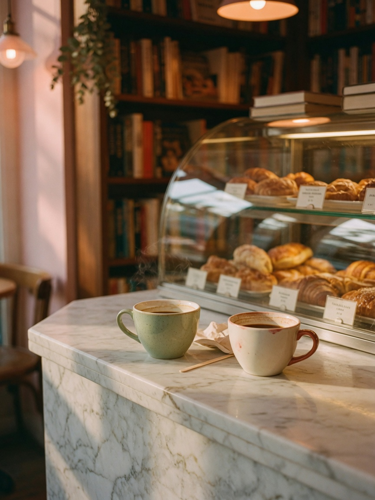
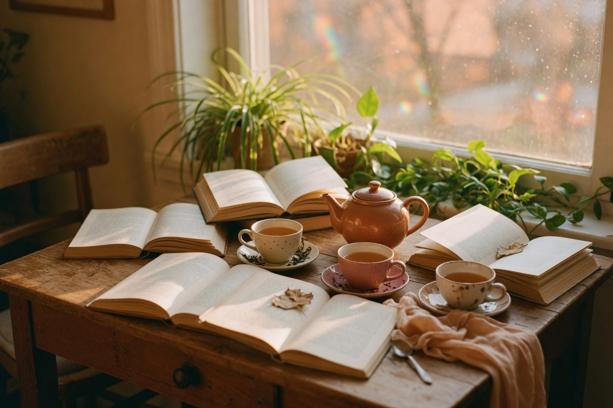

The floor: shelves to the windows, coffee at the back wall.
01
This week
An evening reading
Sample listing
Thursday 10 September 2026 · sample programme
Mira Ellison reads from The Salt Ledger
A guest we invented for this site: Ellison brings a novel of coastal bookkeeping and weather. Chairs, a stool, and the usual lamps. This is not a live event.
The shop is a bookstore that keeps a cafe, and a cafe that keeps you reading. New spines on the long wall; cups on the marble; a pair of chairs that have never been in a hurry.
We buy slowly and shelve by hand. Staff notes are written on paper and tucked into the clothbound ones — sample practice, like everything else named here.
The bar pours coffee and a short kitchen. Menu prices are not published on this site.
The long wall. Notes are ours; titles on this photograph are not meant to be read.

The marble bar. Pastries change; prices are not listed here.

03
Gatherings
A stool, a table, a quiet hour
Readings, a binding workshop, and a book club that meets by the window. Every name and date on the programme is sample content, written so you can see how the shop would speak.